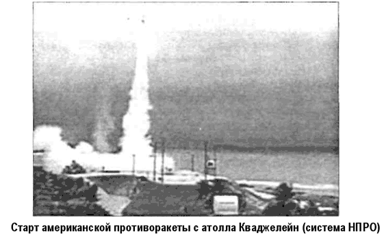
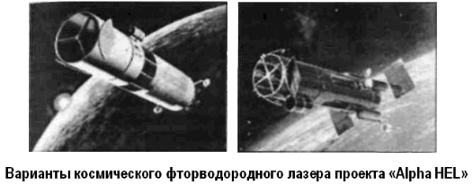
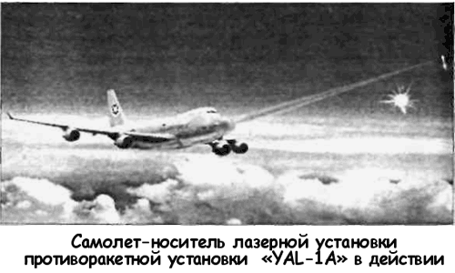
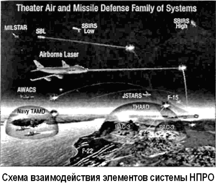

Система национальной противоракетной обороны США (НПРО)
Договора по ПРО более не существует. 13 декабря 2001 года президент США Джордж Буш уведомил президента Российской Федерации Владимира Путина о выходе в одностороннем порядке из Договора по ПРО от 1972 года. Решение было связано с планами Пентагона не позднее чем через полгода провести новые испытания системы Национальной противоракетной обороны (НПРО) с целью защиты от нападения со стороны так называемых «стран-изгоев». Перед тем Пентагон уже провел пять успешных испытаний новой противоракеты, способной поражать межконтинентальные баллистические ракеты класса «Минитмен-2».
Времена «СОИ» вернулись. Америка вновь жертвует своей репутацией на мировой арене и расходует колоссальные средства в погоне за призрачной надеждой получить противоракетный «зонтик», который защитит ее от угрозы с неба. Бессмысленность этой затеи очевидна. Ведь к системам НПРО можно предъявить те же самые претензии, что и к системам «СОИ». Они не обеспечивают стопроцентной гарантии безопасности, но зато могут создать ее иллюзию.
А нет ничего опаснее для здоровья и самой жизни, чем иллюзия безопасности…
Система НПРО США, по замыслам ее создателей, включит в себя несколько элементов: наземные перехватчики ракет («Ground leased Interceptor»), система боевого управления («Battle Management/Command, Control, Communication»), высокочастотные РЛС противоракетной обороны («Ground Based Radiolocator»), РЛС системы предупреждения о ракетном нападении (СПРН), высокочастотные РЛС противоракетной обороны («Brilliant Eyes») и группировка спутников СБИРС.
Наземные перехватчики ракет или противоракеты — основное оружие ПРО. Они уничтожают боеголовки баллистических ракет за пределами земной атмосферы.
Система боевого управления — своеобразный мозг системы ПРО. В случае запуска ракет по территории США именно она будет управлять перехватом.
Наземные высокочастотные радары ПРО отслеживают траекторию полета ракеты и боеголовки. Полученную информацию они отправляют системе боевого управления. Последняя в свою очередь дает команду перехватчикам.
Группировка спутников СБИРС представляет собой двухэшелонную спутниковую систему, которая будет играть ключевую роль в системе управления комплекса НПРО. Верхний эшелон — космический — в проекте включает в себя 4–6 спутников системы предупреждения о ракетном нападении. Низковысотный эшелон состоит из 24 спутников, находящихся на удалении 800-1200 километров.
Эти спутники оснащены датчиками оптического диапазона, которые обнаруживают и определяют параметры движения целей.
По замыслу Пентагона, первоначальным этапом в создании НПРО должно стать строительство радиолокационной станции на острове Шемия (Алеутские острова). Место для начала развертывания системы НПРО выбрано неслучайно.
Именно через Аляску, по расчетам экспертов, проходит большая часть полетных траекторий ракет, которые могут достигнуть территории США. Поэтому там планируется размещение около 100 противоракет. Кстати, эта РЛС, находящаяся еще пока в проекте, завершает создание вокруг США кольца слежения, в которое входят радар в Туле (Гренландия), РЛС «Флаиндейлс» в Великобритании и три радара на территории Соединенных Штатов — «Кэйп Код», «Клэйр» и «Бил». Все они действуют уже на протяжении около 30 лет и в ходе создания системы НПРО будут модернизированы.
Кроме того, подобные же задачи (слежение за пусками ракет и предупреждение о ракетном нападении) станет выполнять и РЛС в Варде (Норвегия), расположенная всего в 40 километрах от российской границы.


Первое испытание противоракеты состоялось 15 июля 2001 года. Оно обошлось американскому налогоплательщику в 100 миллионов долларов США, но зато специалисты Пентагона успешно уничтожили межконтинентальную баллистическую ракету на высоте 144 мили над поверхностью Земли.
Полутораметровый поражающий элемент ракеты-перехватчика, запущенной с атолла Кваджелейн на Маршалловых островах, сближаясь со стартовавшей с базы ВВС США Ванденберг МБР «Минитмэн», поразил ее прямым попаданием, в результате чего на небе наблюдалась ослепительно яркая вспышка, которая вызвала ликование американских военных и технических специалистов, восхищенно потрясавших кулаками.
«По первичным оценкам, все сработало, как надо, — заявил начальник управления по противоракетной обороне министерства обороны США генерал-лейтенант Рональд Кэдиш — Мы попали очень точно… Мы будем настаивать на скорейшем проведении следующего испытания».
Поскольку деньги на НПРО выделяются без задержек, американские военные специалисты развернули бурную деятельность. Разработка ведется сразу по ряду направлений, и создание противоракет — еще не самый сложный элемент в программе.
Уже испытан лазер космического базирования. Это произошло 8 декабря 2000 года. Комплексное испытание фторводородного лазера «Альфа ХЕЛ» («Alpha HEL»), изготовленного компанией «ТРВ» («TRW»), и оптической системы управления лучом, созданной фирмой «Локхид-Мартин», проводились в рамках программы «SBL–IFX» («Space Based Laser Integrated Flight Experiment» — Демонстратор для комплексных летных испытаний лазера космического базирования) на полигоне Капистрано (город Сан-Клемент, штат Калифорния).
В состав системы наведения луча входил оптический блок (телескоп) с системой зеркал «ЛАМР» («LAMP»), использующих технологию адаптивной оптики («мягкие зеркала»).
Первичное зеркало имеет диаметр 4 метра. Кроме того, в систему управления лучом входила система обнаружения, слежения и наведения «АТП» («АТР»). И лазер, и система управления лучом при испытаниях находились в вакуумной камере.
Целью испытаний было определение возможности метрологических систем телескопа поддерживать требуемое направление на цель и обеспечивать управление первичной и вторичной оптикой в ходе высокоэнергетического излучения лазера. Испытания завершились полным успехом: система «АТП» работала даже с большей точностью, чем требовалось.
Согласно официальной информации, вывод на орбиту демонстратора «SBL–IFX» намечен на 2012 год, а его испытания по стартующим межконтинентальным ракетам — на 2013 год. А к 2020 году может быть развернута эксплуатационная группировка космических аппаратов с высокоэнергетическими лазерами на борту.


Тогда, как оценивают эксперты, вместо 250 ракет-перехватчиков на Аляске и в Северной Дакоте достаточно развернуть группировку из 12–20 космических аппаратов на базе технологий «SBL» на орбитах с наклонением 40°. На уничтожение одной ракеты понадобится всего от 1 до 10 секунд в зависимости от высоты полета цели. Перенастройка на новую цель займет всего лишь полсекунды. Система, состоящая из 20 спутников, должна обеспечить почти полное предотвращение ракетной угрозы.
В рамках программы НПРО также планируется использовать лазерную установку воздушного базирования, разрабатываемую по проекту ABL (сокращение от «Airborne Laser»).
Еще в сентябре 1992 года фирмы «Боинг» и «Локхид» получили контракты для определения наиболее подходящего из существующих самолетов для проекта ABL. Обе команды пришли к одному и тому же выводу и рекомендовали ВВС США использовать в качестве платформы «Боинг-747».
В ноябре 1996 года ВВС США заключили контракт с фирмами «Боинг», «Локхид» и «ТРВ» в 1,1 миллиарда долларов на разработку и летные испытания системы вооружения по программе «АБЛ». 10 августа 1999 года была начата сборка первого самолета «747–400 Freighter» для «ABL». 6 января 2001 года самолет YAL-1A совершил первый полет с аэродрома города Эверетт. На 2003 год намечено боевое испытание системы оружия, в ходе которого должна быть сбита оперативнотактическая ракета. Предусматривается поражение ракет на активной стадии их полета.
Основой системы вооружения является йод-кислородный химический лазер, разработанный «ТРВ». Высокоэнергетичный лазер («HEL») имеет модульную конструкцию, для снижения веса в его конструкции широко используются новейшие пластмассы, композиты и титановые сплавы. В лазере, имеющем рекордную химическую эффективность, используется закрытая схема с рециркуляцией реагентов.
Лазер устанавливается в 46-й секции на основной палубе самолета. Для обеспечения прочности, термической и химической устойчивости под лазером устанавливаются две титановые панели обшивки нижней части фюзеляжа. К носовой турели луч передается по специальной трубе, проходящей по верхней части фюзеляжа через все переборки. Стрельба осуществляется с носовой турели весом около 6,3 тонны. Она может поворачиваться на 150° вокруг горизонтальной оси, отслеживая цель. Фокусировка луча на цели осуществляется 1,5-метровым зеркалом, имеющим сектор обзора по азимуту в 120°.
В случае успешных испытаний намечается выпустить к 2005 году три таких самолета, а к 2008 году — система воздушной ПРО должна быть полностью готова. Флот из семи самолетов сможет в течении 24 часов локализовать угрозу в любой точке земного шара.
И это тоже не все. В печать постоянно просачивается информация о испытаниях мощных лазеров наземного базирования, о возрождении кинетических систем воздушного базирования типа «ASAT», о новых проектах по созданию гиперзвуковых бомбардировщиков, о грядущем обновлении спутниковой системы раннего предупреждения. Против кого все это? Неужели против Ирака с Северной Кореей, которые до сих пор не могут построить работоспособную межконтинентальную ракету?..
Признаться, столь вызывающая активность американских военных специалистов на ниве создания НПРО пугает.
Боюсь, мы входим в ту фазу человеческого развития, после которой полеты на Луну, на Марс и создание орбитальных городов станет просто-напросто невозможным…